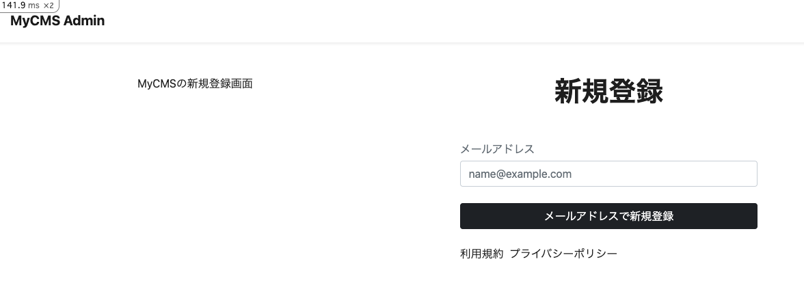
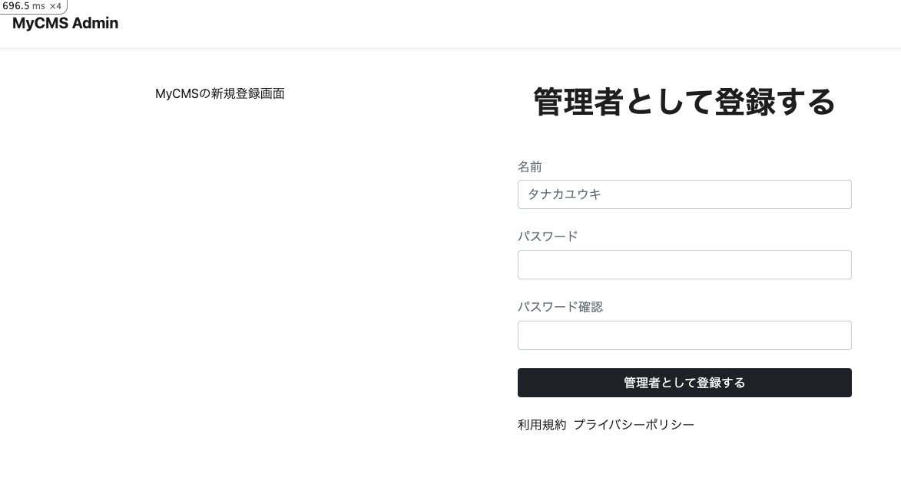
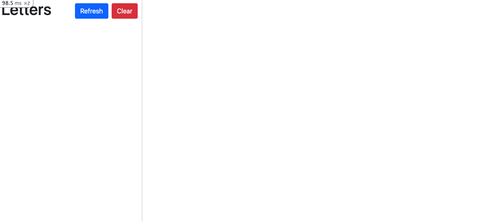
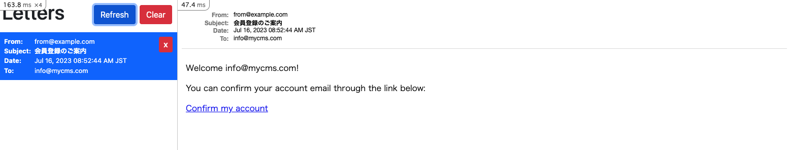

認証機能: 新規登録
管理者アカウントの新規登録機能を実装します。
新規登録の流れ
- 管理者アカウントの新規登録画面でメールアドレスを入力して送信
- メールアドレスが登録済みかどうかを確認し、メールアドレスを認証するためのリンクが添付されたメールを送信
- 認証リンクをクリックし、管理者アカウント情報を入力して登録完了
- ログインする
ルーティングの設定
[code]
config/routes/admin/devise.rbに以下のルーティングを追加します。
# frozen_string_literal: true
Rails.application.routes.draw do
# 省略
# 以下パスに変更
devise_scope :admin_registration do
post "admin/registration/finish", to: "admin/registrations#finish", as: "finish_admin_registration"
end
end
[command]
bin/rails routes -g admin/registration/finishを実行して、ルーティングが追加されていることを確認します。
bin/rails routes -g admin/registration/finish
[output]
/workspace# bin/rails routes -g admin/registration/finish
Prefix Verb URI Pattern Controller#Action
finish_admin_registration POST /admin/registration/finish(.:format) admin/registrations#finish
ルーティングが追加されていることを確認することができました。
コントローラーの作成
[command]
touch app/controllers/admin/registrations_controller.rb
[code]
app/controllers/admin/registrations_controller.rbを以下のように編集します。
# frozen_string_literal: true
class Admin::RegistrationsController < Devise::ConfirmationsController
layout "admin/auth"
# GET /resource/confirmation/new
def new
super
end
# POST /resource/confirmation
def create
registered = Admin::DatabaseAuthentication.where(email: params[:registration][:email]).exists?
if registered
flash[:error] = "Given email address is already registered."
return render :new
end
admin_registration = Admin::Registration.find_or_initialize_by(unconfirmed_email: params[:registration][:email])
if admin_registration.save
Admin::DeviseMailer.confirmation_instructions(admin_registration).deliver_now
flash[:notice] = "Sending an email confirmation instruction"
redirect_to new_admin_database_authentication_session_path and return
else
respond_with(admin_registration)
end
end
# GET /resource/confirmation?confirmation_token=abcdef
def show
@admin = Admin.new
@admin_database_authentication = Admin::DatabaseAuthentication.new
end
def finish
admin_registration = Admin::Registration.confirm_by_token(params[:confirmation_token])
ActiveRecord::Base.transaction do
@admin = Admin.new(full_name: params[:full_name])
@admin_database_authentication = Admin::DatabaseAuthentication.new(
admin: @admin,
email: admin_registration&.unconfirmed_email,
password: params[:password],
password_confirmation: params[:password_confirmation]
)
@admin.save!
@admin_database_authentication.save!
admin_registration.destroy!
end
sign_in(:admin, @admin)
sign_in(:database_authentication, @admin_database_authentication)
redirect_to new_admin_database_authentication_session_path
rescue StandardError
render :show
end
end
ビューの作成
[command]
mkdir -p app/views/admin/registrations && touch app/views/admin/registrations/new.html.erb && touch app/views/admin/registrations/show.html.erb
[code]
app/views/admin/registrations/new.html.erbを以下のように編集します。
<main>
<div class="">
<div class="row">
<div class="col">
<div class="py-5 d-flex justify-content-center align-items-center">
MyCMSの新規登録画面
</div>
</div>
<div class="col">
<div class="py-5 d-flex justify-content-center align-items-center">
<div class="w-75 mx-3">
<h1 class="text-center fw-bold">ログイン</h1>
<div class="w-100 mx-auto mt-5">
<%= form_for(resource, as: resource_name, url: admin_registration_confirmation_path) do |f| %>
<div class="mt-4">
<label for="email" class="mb-1 form-label text-small text-muted">メールアドレス</label>
<input type="email" class="form-control" id="email" placeholder="name@example.com" name="registration[email]">
</div>
<div class="mt-4">
<button class="btn btn-dark w-100">
メールアドレスで新規登録
</button>
</div>
<% end %>
<ul class="mt-4 d-flex">
<li class="me-2 text-muted">
<a href="/terms">利用規約</a>
</li>
<li class="me-2 text-muted">
<a href="/privacy">プライバシーポリシー</a>
</li>
</ul>
</div>
</div>
</div>
</div>
</div>
</div>
</main>
[output]
以下にアクセスして、以下のような画面が表示されることを確認します。
http://localhost:3000/admin/confirmation/new

[code]
app/views/admin/registrations/show.html.erbを以下のように編集します。
<main>
<div class="">
<div class="row">
<div class="col">
<div class="py-5 d-flex justify-content-center align-items-center">
MyCMSの新規登録画面
</div>
</div>
<div class="col">
<div class="py-5 d-flex justify-content-center align-items-center">
<div class="w-75 mx-3">
<h1 class="text-center fw-bold">管理者として登録する</h1>
<div class="w-100 mx-auto mt-5">
<%= form_tag(finish_admin_registration_path) do |f| %>
<input type="hidden" name="confirmation_token" value="<%= params[:confirmation_token] %>">
<div class="mt-4">
<label for="full_name" class="mb-1 form-label text-small text-muted">名前</label>
<input type="text" class="form-control" id="full_name" placeholder="タナカユウキ" name="full_name">
</div>
<div class="mt-4">
<label for="password" class="mb-1 form-label text-small text-muted">パスワード</label>
<input type="password" class="form-control" id="password" name="password">
</div>
<div class="mt-4">
<label for="password_confirmation" class="mb-1 form-label text-small text-muted">パスワード確認</label>
<input type="password" class="form-control" id="password_confirmation" name="password_confirmation">
</div>
<div class="mt-4">
<button class="btn btn-dark w-100">
管理者として登録する
</button>
</div>
<% end %>
<ul class="mt-4 d-flex">
<li class="me-2 text-muted">
<a href="/terms">利用規約</a>
</li>
<li class="me-2 text-muted">
<a href="/privacy">プライバシーポリシー</a>
</li>
</ul>
</div>
</div>
</div>
</div>
</div>
</div>
</main>
[output]
以下にアクセスして、以下のような画面が表示されることを確認します。
http://localhost:3000/admin/confirmation

Mailerの作成
Railsでのメール送信には、ActionMailerを使います。ActionMailerは、メールの送信に必要なメソッドを提供します。
[command]
touch app/mailers/admin/devise_mailer.rb
[code]
app/mailers/admin/devise_mailer.rbを以下のように編集します。
# frozen_string_literal: true
class Admin::DeviseMailer < Admin::ApplicationMailer
default from: "from@example.com"
layout "mailer"
def confirmation_instructions(resource)
subject = "会員登録のご案内"
template_path = "admin/mailer/devise"
template_name = "confirmation_instructions"
@token = resource&.confirmation_token
@email = resource&.unconfirmed_email
mail(
to: @email,
subject: subject,
template_path: template_path,
template_name: template_name
)
end
end
config/initilizers/devise.rbに以下を追加します。
config.mailer = 'Admin::DeviseMailer'
メールのテンプレートの作成
[command]
mkdir -p app/views/admin/mailer/devise && touch app/views/admin/mailer/devise/confirmation_instructions.html.erb
[code]
app/views/admin/mailer/devise/confirmation_instructions.html.erbを以下のように編集します。
<p>Welcome <%= @email %>!</p>
<p>You can confirm your account email through the link below:</p>
<p><%= link_to 'Confirm my account', admin_registration_confirmation_url(confirmation_token: @token) %></p>
Letter Opener Webの設定
Letter Opener Webを使って、メールの送信内容を確認できるようにします。
[code]
Gemfileを以下のように編集します。
gem "letter_opener_web", "~> 2.0"
[command]
bundle install
[code]
config/routes.rbを以下のように編集します。
mount LetterOpenerWeb::Engine, at: "/letter_opener" if Rails.env.development? || Rails.env.staging?
[code]
config/environments/development.rbに以下を追加します。
config.action_mailer.default_url_options = { host: "localhost:3000" }
config.action_mailer.delivery_method = :letter_opener_web
サーバーを再起動して、以下にアクセスして、以下のような画面が表示されることを確認します。
http://localhost:3000/letter_opener

管理者アカウント新規登録
[try]
以下の画面から、メールアドレスを入力して管理者アカウントの新規登録を行います。
info@mycms.comを入力してみます。
http://localhost:3000/admin/confirmation/new
メールアドレスを入力して送信すると、Letter Opener Webの画面で以下のようなメールが表示されます。
http://localhost:3000/letter_opener/

メールのリンクをクリックすると、以下のような画面が表示されます。
app/controllers/admin/registrations_controller.rbで定義したshowアクションが呼び出されています。
名前、パスワード、パスワード確認を入力して送信して、管理者アカウントの新規登録は完了です。